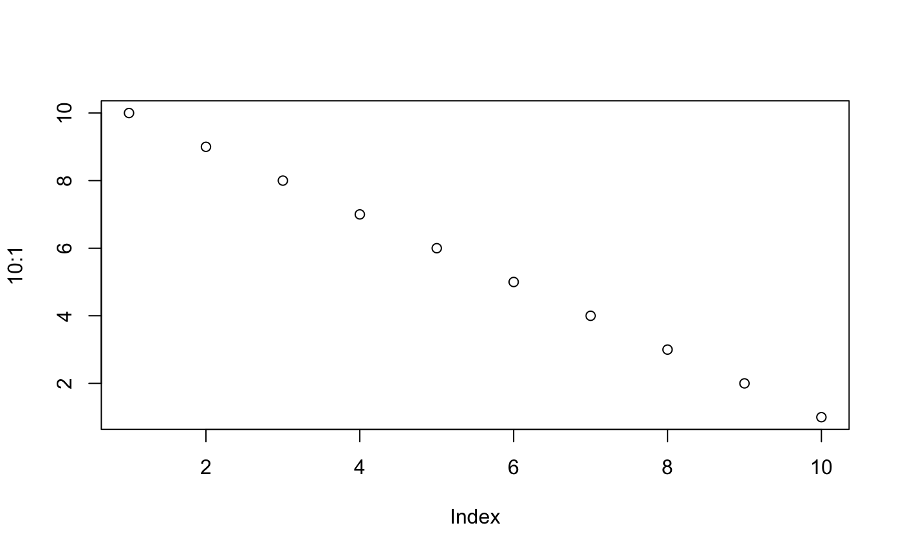

load_db.RmdUsing PostgreSQL with PostGIS extension in Docker:
postgis, database am user admin
On command line:
# set password as environment variable read in from file
DB_PASS=`cat ~/private/pg_pass`
# run docker with image
docker run --name=postgis \
-d -e POSTGRES_USER=admin \
-e POSTGRES_PASS=$DB_PASS \
-e POSTGRES_DBNAME=am \
-e ALLOW_IP_RANGE=0.0.0.0/0 \
-p 5432:5432 \
-v pg_data:/var/lib/postgresql \
-v /Users/bbest/docker_pg_data:/data \
--restart=always \
kartoza/postgis:11.0-2.5
# check logs
docker logs postgislibrary(tidyverse)
#> ── Attaching packages ───────────────────────────────────────────────────────────────────────── tidyverse 1.2.1 ──
#> ✔ ggplot2 3.1.0 ✔ purrr 0.3.0
#> ✔ tibble 2.0.1 ✔ dplyr 0.7.8
#> ✔ tidyr 0.8.2 ✔ stringr 1.4.0
#> ✔ readr 1.3.1 ✔ forcats 0.3.0
#> ── Conflicts ──────────────────────────────────────────────────────────────────────────── tidyverse_conflicts() ──
#> ✖ dplyr::filter() masks stats::filter()
#> ✖ dplyr::lag() masks stats::lag()
library(here)
#> here() starts at /Users/bbest/github/seaoflife
library(glue)
#>
#> Attaching package: 'glue'
#> The following object is masked from 'package:dplyr':
#>
#> collapse
library(raster)
#> Loading required package: sp
#>
#> Attaching package: 'raster'
#> The following object is masked from 'package:glue':
#>
#> trim
#> The following object is masked from 'package:dplyr':
#>
#> select
#> The following object is masked from 'package:tidyr':
#>
#> extract
library(DBI)
library(RPostgreSQL)
library(devtools); load_all() # library(seaoflife)
#> Loading gmbi
con <- get_db_con(password=readLines("~/private/pg_pass"))csv_to_db(con)spp <- tbl(con, "spp")
cells <- tbl(con, "cells")
spp_cells <- tbl(con, "spp_cells")
obs_cells <- tbl(con, "obs_cells")Reference:
Tittensor DP, C Mora, W Jetz, HK Lotze, D Ricard, EV Berghe, B Worm (2010) Global patterns and predictors of marine biodiversity across taxa. Nature
Class == "Actinopterygii" & !Family %in% c("Scombridae", "Istiophoridae", "Xiphiidae")
rredlist::rl_habitats()
Class == "Cephalopoda" & !Order %in% c("Myopsida","Oegopsida")
Family %in% c("Odobenidae", "Otariidae", "Phocidae")
Class == "Anthozoa" (soft/hard + anemones + gorgonians)Order == "Alismatales"
Genus == "Avicennia" & Species == "germinans" (n=1)Family %in% c("Scombridae", "Istiophoridae", "Xiphiidae")
rredlist::rl_habitats()
Order %in% c("Myopsida","Oegopsida")
Order == "Artiodactyla"
Order == "Euphausiacea"
Class %in% c("Malacostraca","Ostracoda","Branchiopoda","Cephalocarida","Maxillopoda")
Class == "Pycnogonida"
Class == "Gastropoda"
Class == "Bivalvia"
Class == "Polyplacophora"
Class %in% c("Ascidiacea","Thaliacea")
Class == "Elasmobranchii" (actually Class=Chondrichthyes, Subclass=Elasmobranchii)Class == "Reptilia" crocodiles, sea snakes & sea turtlesPhylum == "Echinodermata"
Phylum == "Porifera"
Phylum == "Annelida"
Class == "Hydrozoa"
if (!file.exists(spp_grouped_csv)){
spp <- suppressMessages({ read_csv(spp_csv) })
# spp %>% filter(is.na(group)) %>% pull(Class) %>% table() %>% sort()
# spp %>% filter(Class == "Reptilia") %>% View() %>% pull(Class) %>% table() %>% sort
#
# # https://en.wikipedia.org/wiki/Mangrove
# spp %>% filter(Family %in% c("Acanthaceae","Arecaceae","Bombacaceae","Cyperaceae","Euphorbiaceae","Lecythidaceae","Lythraceae","Meliaceae","Myrtaceae","Pellicieraceae","Plumbaginaceae","Primulaceae","Pteridaceae","Rubiaceae","Sterculiaceae"))
spp <- spp %>%
mutate(
group = case_when(
Class == "Actinopterygii" & !Family %in% c("Scombridae", "Istiophoridae", "Xiphiidae") ~ "Coastal fishes",
Class == "Cephalopoda" & !Order %in% c("Myopsida","Oegopsida") ~ "Non-squid cephalopods",
Family %in% c("Odobenidae", "Otariidae", "Phocidae") ~ "Pinnipeds",
Class == "Anthozoa" ~ "Corals",
Order == "Alismatales" ~ "Seagrasses",
Genus == "Avicennia" & Species == "germinans" ~ "Mangroves",
Family %in% c("Scombridae", "Istiophoridae", "Xiphiidae") ~ "Tunas & billfishes",
Order %in% c("Myopsida","Oegopsida") ~ "Squids",
Order == "Artiodactyla" ~ "Cetaceans",
Order == "Euphausiacea" ~ "Euphausiids",
Class %in% c("Malacostraca","Ostracoda","Branchiopoda","Cephalocarida","Maxillopoda") ~ "Crustaceans",
Class == "Pycnogonida" ~ "Sea spiders",
Class == "Gastropoda" ~ "Gastropods",
Class == "Bivalvia" ~ "Bivalves",
Class == "Polyplacophora" ~ "Chitons",
Class %in% c("Ascidiacea","Thaliacea") ~ "Tunicates",
Class == "Elasmobranchii" ~ "Sharks",
Class == "Reptilia"~ "Reptiles",
Phylum == "Echinodermata"~ "Echinoderms",
Phylum == "Porifera" ~ "Sponges",
Phylum == "Annelida" ~ "Worms",
Class == "Hydrozoa" ~ "Hydrozoans")) %>%
select(-X11, -X12)
write_csv(spp, spp_grouped_csv)
}
spp <- suppressMessages({ read_csv(spp_grouped_csv) })
# show AquaMap species counts by Phylum and Class ----
cat("\nspp$Phylum\n")
table(spp$Phylum)
cat("\nspp$Class\n")
table(spp$Class)
cat("\nspp$Class sorted by count\n")
table(spp$Class) %>% sort()
cat("\nspp$Class not in group\n")
spp %>% filter(is.na(group)) %>% pull(Class) %>% table() %>% sort()
# AquaMap species counts by Phylum and Class
# iterate over groups ----
groups <- spp %>%
group_by(group) %>%
summarize(
n = n()) %>%
arrange(n) %>% #View()
filter(!is.na(group)) %>%
pull(group)
#groups <- sort(unique(spp$group))
#for (i in seq_along(groups)){ # i = 3
for (i in 18:length(groups)){ # i = 3
grp <- groups[i]
spp_grp <- filter(spp, group == !!grp) %>% arrange(Genus, Species)
grp_fname <- grp %>% str_replace_all("[ -]", ".") %>% str_to_lower()
cat(glue("group {sprintf('%02d',i)} of {length(groups)}: {grp} (n_spp = {format(nrow(spp_grp), big.mark = ',')}) - {Sys.time()}\n\n"))
spp_grp_grd <- glue("{dir_local}/spp_{grp_fname}.grd")
spp_grp_ext_csv <- glue("{dir_spp}/../groups/spp_{grp_fname}_ext.csv")
spp_grp_ext_grd_csv <- glue("{dir_spp}/../groups/spp_{grp_fname}_ext_grd.csv")
grp_be_tif <- glue("{dir_spp}/../groups/spp_{grp_fname}_be.tif") # binary, extinction
#grp_rem_tif <- glue("{dir_spp}/groups/spp_{grp_fname}_rem.tif") # relative, extinction, endemism
grp_rel_tif <- glue("{dir_spp}/../groups/spp_{grp_fname}_rel.tif") # relative, extinction, log(endemism)
if (!file.exists(spp_grp_ext_csv)){
cat(glue(" fetching spp_grp IUCN categories - {Sys.time()}\n", .trim=F))
spp_grp <- spp_grp %>%
mutate(
genus_species = glue("{Genus} {Species}") %>% as.character(),
#iucn_category = map_chr(genus_species, get_iucn_category),
# parallelize with future:: 3X faster!
iucn_future = map(genus_species, ~future(get_iucn_category(.x))),
iucn_category = map_chr(iucn_future, ~value(.x)),
iucn_weight = iucn_weights[iucn_category],
tif = glue("{dir_spp}/{SPECIESID}.tif"),
tif_ext = glue("{dir_spp}/{SPECIESID}_ext.tif"),
stack_name = str_replace_all(SPECIESID, "-", ".")) %>%
select(-iucn_future)
write_csv(spp_grp, spp_grp_ext_csv)
}
spp_grp <- suppressMessages({ read_csv(spp_grp_ext_csv) })
# quick fix
spp_grp <- spp_grp %>%
mutate(
tif_ext = glue("{dir_spp}/{SPECIESID}_ext.tif"))
write_csv(spp_grp, spp_grp_ext_csv)
spp_grp <- suppressMessages({ read_csv(spp_grp_ext_csv) })
cat(glue(" extend species rasters to globe - {Sys.time()}\n", .trim=F))
#sapply(spp_grp$tif, function(tif, tif_ext) raster(tif, crs=leaflet:::epsg4326) %>% extend(r_na))
extend_tif <- function(tif, tif_ext){
if (file.exists(tif_ext)) return(F)
raster(tif, crs=leaflet:::epsg4326) %>%
extend(r_na) %>%
writeRaster(tif_ext)
return(T)
}
# fs::file_delete(spp_grp$tif_ext)
future_tifs <- map2(spp_grp$tif, spp_grp$tif_ext, ~future(extend_tif(.x, .y)))
future_vals <- map_lgl(future_tifs, ~value(.x))
# TODO: spp raster here
if (any(!file.exists(spp_grp_ext_grd_csv, grp_be_tif, grp_rel_tif))){
cat(glue(" read raster stack of species - {Sys.time()}\n", .trim=F))
#s_g <- stack(spp_grp_grd)
s_g <- stack(spp_grp$tif_ext)
names(s_g) <- spp_grp$SPECIESID
}
if (!file.exists(spp_grp_ext_grd_csv)){
cat(glue(" rescaling with cellStats - {Sys.time()}\n", .trim=F))
# get stats on sum RES and area
spp_grp <- spp_grp %>%
mutate(
sum_RES = map_dbl(stack_name, get_spp_stat, s_g, "sum_RES"),
sum_area_km2 = map_dbl(stack_name, get_spp_stat, s_g, "sum_area_km2"),
rescale_RES = rescale(1/sum_RES),
logrescale_RES = rescale(1/log(sum_RES)))
write_csv(spp_grp, spp_grp_ext_grd_csv)
}
spp_grp <- suppressMessages({ read_csv(spp_grp_ext_grd_csv) })
#table(spp_grp$iucn_weight)
# spp_grp %>%
# select(SPECIESID, FBname, genus_species,
# iucn_category, iucn_weight,
# sum_area_km2, sum_RES, rescale_RES, logrescale_RES) %>%
# DT::datatable()
# table(spp_g$iucn_category, useNA = "ifany")
if (!file.exists(grp_be_tif)){
cat(glue(" sum_am_stack(binary, extinction) - {Sys.time()}\n", .trim=F))
r_be <- sum_am_stack(
s_g, spp_grp, do_rel=F, do_ext=T, do_rng=F, do_sca=T, binary_threshold = 0.4)
writeRaster(r_be, grp_be_tif)
}
#r_be <- raster(grp_be_tif)
if (!file.exists(grp_rel_tif)){
cat(glue(" sum_am_stack(relative, extinction, log(endemism)) - {Sys.time()}\n", .trim=F))
r_rel <- sum_am_stack(
s_g, spp_grp, do_rel=T, do_ext=T, do_rng=T, log_rng=T, do_sca=T)
writeRaster(r_rel, grp_rel_tif)
}
#r_rel <- raster(grp_rel_tif)
# cat(glue(" map_am_sum() - {Sys.time()}\n", .trim=F))
# map_am_sum(r_be, glue("{grp}: Binary<br> * Extinction"))
# map_am_sum(r_rel, glue("{grp}: Relative<br> * Extinction<br> * log(Endemism)"))
}Vignettes are long form documentation commonly included in packages. Because they are part of the distribution of the package, they need to be as compact as possible. The html_vignette output type provides a custom style sheet (and tweaks some options) to ensure that the resulting html is as small as possible. The html_vignette format:
Note the various macros within the vignette section of the metadata block above. These are required in order to instruct R how to build the vignette. Note that you should change the title field and the \VignetteIndexEntry to match the title of your vignette.
The html_vignette template includes a basic CSS theme. To override this theme you can specify your own CSS in the document metadata as follows:
output:
rmarkdown::html_vignette:
css: mystyles.cssThe figure sizes have been customised so that you can easily put two images side-by-side.

You can enable figure captions by fig_caption: yes in YAML:
output:
rmarkdown::html_vignette:
fig_caption: yesThen you can use the chunk option fig.cap = "Your figure caption." in knitr.
You can write math expressions, e.g. \(Y = X\beta + \epsilon\), footnotes1, and tables, e.g. using knitr::kable().
| mpg | cyl | disp | hp | drat | wt | qsec | vs | am | gear | carb | |
|---|---|---|---|---|---|---|---|---|---|---|---|
| Mazda RX4 | 21.0 | 6 | 160.0 | 110 | 3.90 | 2.620 | 16.46 | 0 | 1 | 4 | 4 |
| Mazda RX4 Wag | 21.0 | 6 | 160.0 | 110 | 3.90 | 2.875 | 17.02 | 0 | 1 | 4 | 4 |
| Datsun 710 | 22.8 | 4 | 108.0 | 93 | 3.85 | 2.320 | 18.61 | 1 | 1 | 4 | 1 |
| Hornet 4 Drive | 21.4 | 6 | 258.0 | 110 | 3.08 | 3.215 | 19.44 | 1 | 0 | 3 | 1 |
| Hornet Sportabout | 18.7 | 8 | 360.0 | 175 | 3.15 | 3.440 | 17.02 | 0 | 0 | 3 | 2 |
| Valiant | 18.1 | 6 | 225.0 | 105 | 2.76 | 3.460 | 20.22 | 1 | 0 | 3 | 1 |
| Duster 360 | 14.3 | 8 | 360.0 | 245 | 3.21 | 3.570 | 15.84 | 0 | 0 | 3 | 4 |
| Merc 240D | 24.4 | 4 | 146.7 | 62 | 3.69 | 3.190 | 20.00 | 1 | 0 | 4 | 2 |
| Merc 230 | 22.8 | 4 | 140.8 | 95 | 3.92 | 3.150 | 22.90 | 1 | 0 | 4 | 2 |
| Merc 280 | 19.2 | 6 | 167.6 | 123 | 3.92 | 3.440 | 18.30 | 1 | 0 | 4 | 4 |
Also a quote using >:
“He who gives up [code] safety for [code] speed deserves neither.” (via)
A footnote here.↩